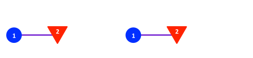
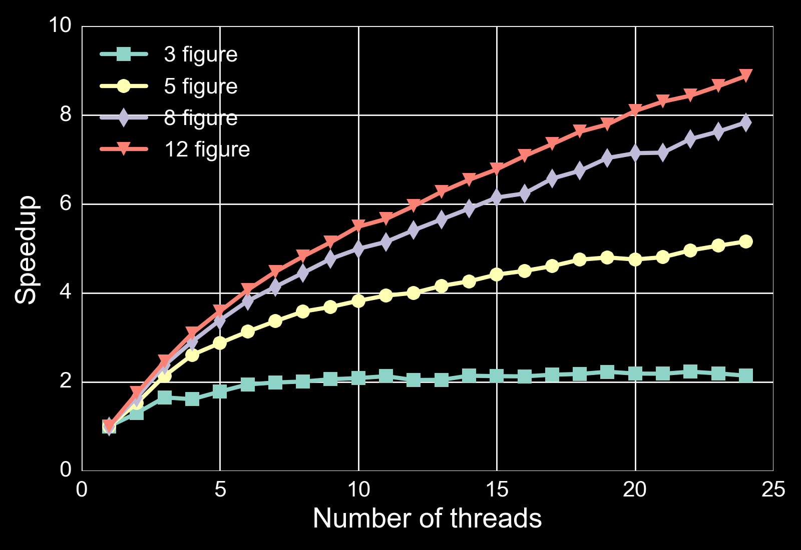
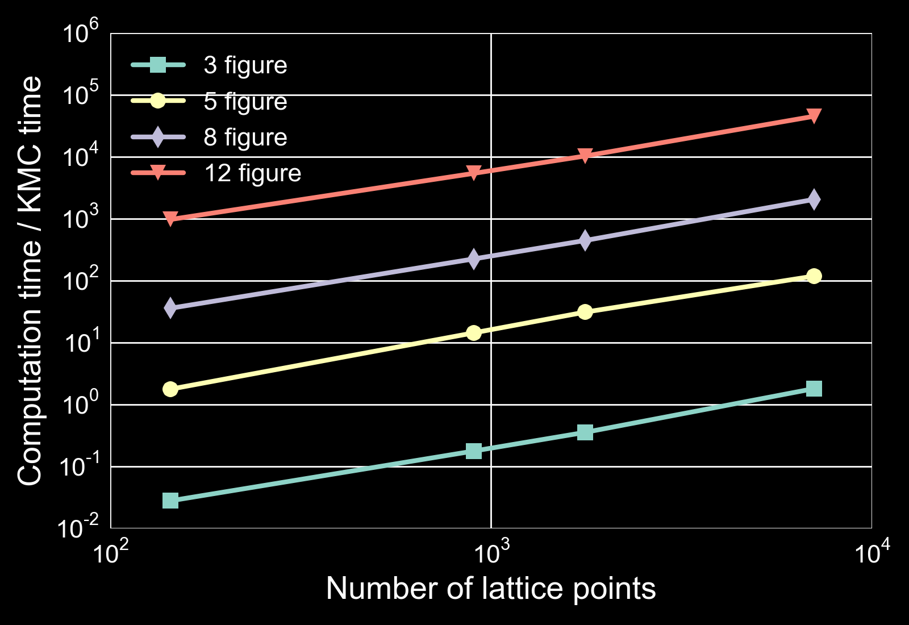

Close
Close

Introduction to Zacros
Zacros:

- Kinetic Monte Carlo (KMC) simulation of surface chemistry
- Graph theoretical framework
- Handle complex surface patterns
For more info visit: zacros.org
Reaction patterns
- Possible reactions get a time assigned based on:
- kinetic rate constants (Propensities)
- A random number

See Stamatakis and Vlachos. 2011. J. Chem. Phys. 134(21): 214115 and Nielsen et. al. 2013. J. Chem. Phys. 139(22): 224706
Surface energy
To calculate rates, the surface energy is needed:
- Surface energy is given as a cluster expansion
- I.e. an expansion in simple surface patterns

Pseudo code
- Select most imminent process
- Remove adsorbates from lattice
- Remove clusters with reactants
- Remove reactions involving the reactants
- Add product adsorbates
- Find new energy clusters
- Find existing processes that need update
- Update rates of existing processes
- Add new processes
Technical
- Fortran 95/2003 code
- Originally fully serial
- Two performance issues with serial code identified
Cluster Expansion
- Long range interactions requires large cluster expansions
- Larger cluster expansions => More processes to update
- This is the first performance issue

Lattice size
Large lattice for accurate simulations
- Update time is independent of lattice size
- But reaction rate is not
- KMC time / CPU time depends linearly on the number of sites
- Large lattices are time consuming to simulate
- The second performance issue
Reaction updates:
OpenMP:
- Profiling shows bottleneck in update rates ...
- Many processes are affected
- Especially for large cluster expansion
- Do loop of independent processes to update
- OpenMP parallization of this loop
See Nielsen et. al. 2013. J. Chem. Phys. 139(22): 224706
Scaled performance of OpenMP

Computational time per event

Computational time / KMC time

- But number of events per simulated second is not
- 12 figure expansion at 7056 lattice points (12 threads):
- $> 10^4$ seconds per simulated second
Limitations
Decent speed up for large cluster expansions but:
- OpenMP limited to one computational node
- Simulations are still too slow for large lattices and clusters
Solution: MPI Parallelization over lattice
Spatial Parallelization
MPI based parallelization
- Reactions on individual domains
- Halo for
- Reactants
- Products
- Energetic clusters

Original plan:
Implement algorithm proposed by Lubachevsky
- Algorithm is developed for Ising spin model
- Each domain keeps track of a local time
- Global time is min(localTimes)
- Updates in a MPI domain is allowed if:
- Local time is smaller than all neighbours
Lubachevsky. 1988. J. Comp. Phys. 75 (1): 103
Algorithm
- Perform spin flip if time is smallest among neighbours
- Select a site and either:
- Perform spin flip
- Perform null event
- Advance local time by a random interval
- Repeat
Time advancement is independent of whether a spin is flipped
Energetics affect the relative probability of null events
Algorithm in Zacros
Same principle:
- If local time < neighbours time:
- Advance local time
- Perform reaction
- Send halo and new local time
- Else:
- Wait to receive halo and time
Issues in Zacros
- Future reactions have a wait time associated with them
- Wait time is random but determined by reaction rates
- Most imminent reaction is performed
- Reaction happen after wait time
- Wait time can differ by several orders of magnitude
Example
Assume that we have 3 MPI nodes in a 1D array
Both $P1$ and $P3$ are free to perform reactions

Example
Assume that we have 3 MPI nodes in a 1D array
Conflict $\textrm{P}_1$ should not have performed a reaction

In summary
- Can't change the condition to smallest among $T{local} + T{wait}$
- The reactions that $T_{wait}$ on neighbours represent have not happened:
- In fact they may never happen
- Reactions may propagate across domains
Alternative strategies
An alternative proposed by Jefferson
- Each node propagates its reactions without synchronization
- Stores a list of anti reactions to performed reactions
- When a reaction is performed messages are sent to relevant neighbours
Jefferson. 1985. ACM Trans. Program. Lang. Syst. 7 (3): 404
Alternative strategies
- If conflicts arise neighbours will roll-back
- Sending anti messages to their neighbours
- With further potential roll-back
- The "slowest" node determine a virtual time horizon (Global time)
- No roll-backs beyond this the are needed
Conclusion
Conclusion
- Good performance improvement for long range interactions
- Spatial parallelization is on-going work
- Change of algorithm